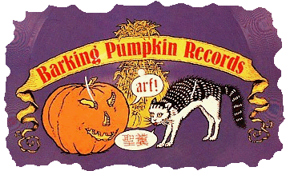

Заппа'zУх!Ой!
русский более или менее регулярный бюллетень для поклонников американского композитора
Frank'а Vincent'а Zappa'ы
Выпуск.22 (10 марта 2000)
Звуки Фу
В большой стране Америке, что передом к Европе, а задом к Азии,
ветры дуют со всех сторон. Те, которые с кормовой части, приносят
не только камикадзе вперемежку с томагочи, но и всякую пупосозерцательную
дребедень на сале многопудового Будды. Не нашедшие своего места в
народном хозяйстве граждане бреют головы и вместо штанов с ширинкой там,
где напрашивается сама собой, щеголяют в розовых хламидах с физиологией
необусловенными разрезами и складками.
 Понятно, что человек, легко превращающий Jump Hare Rama в Chump Hare
Rama и обратно
(Can't Afford No Shoes.
OSFA) едва ли может без
ухмылки наблюдать за подобного рода асоциальными загогулинами
доморощенных самураев конфа и фуция. Так оно, конечно, и есть, поэтому,
естественным образом, предполагаешь, что и иероглифы,
разнообразящие мрачноватую обложку альбома Фрэнка Заппы
Zoot Allures -
это какая-нибудь очередная циничная фуфука Калифорнийского дадаиста
на тему
китайса и американса есть быть братья на век.
Понятно, что человек, легко превращающий Jump Hare Rama в Chump Hare
Rama и обратно
(Can't Afford No Shoes.
OSFA) едва ли может без
ухмылки наблюдать за подобного рода асоциальными загогулинами
доморощенных самураев конфа и фуция. Так оно, конечно, и есть, поэтому,
естественным образом, предполагаешь, что и иероглифы,
разнообразящие мрачноватую обложку альбома Фрэнка Заппы
Zoot Allures -
это какая-нибудь очередная циничная фуфука Калифорнийского дадаиста
на тему
китайса и американса есть быть братья на век.
Как не удивительно, но на сей раз мы имеем дело с тотальной серьезностью
отягощенной даже элементами сентиментальности. Впрочем, если,
вспомнив об угрюмой распре,
сопровождавшей выход альбома, вы вдруг подумали
что Фрэнки разразился меланхолической хайкой о лучах зимней луны на
бороде Херби Коэна, то спешу разрядить обстановку, нет, кровяное
ханко внизу и в центре обложечного конверта никакого зашифрованного
сообщения о снегире сиротливо гадящем на Фудзияму не содержит.
Загадка имеет простую фонетическую
разгадку, грамматически неверный набор иероглифов канжи, оформленных в виде
традиционной личной печати,
читается так
ЗА ППА
Что касается группы резвящихся глистов на обратной стороне обложки,
то звучат они

при внешней своей очевидной неказистости намного торжественнее
ФУ РАН КУ ЗА ППА
То есть с серьезностью, все в порядке. А вот некоторую дозу душевного
волнения, связанного с этими надписями, позволяет предположить
история их появления на свет вообще и у ФЗ в частности.
Как следует из обложечных замечаний, прибавленных компанией MSI
к японскому изданию альбома Zoot Allures, во время своего первого
турне по островам (01.02.76 - 05.02.76) Фрэнк был необыкновенно тепло
встречен студентами университета Киото, которые и преподнесли мастеру
печать и именную плашку, исполненные знаками местного наречия.
Ну, а он затем припечатал и то, и другое, как беспечный первоклассник,
намазанную чернилами резинку, к обложке нового альбома, то есть,
послал мужикам привет от чистого сердца.
Бонзай всем на шхуне! Фройндшафт!
Кстати, сам альбом, сугубо студийный содержит одну заловую, живую вещичку,
сыгранную как раз на японской сцене. Это Black Napkins. Место записи,
правда, не Киото, а Осака. Насколько замечательным был концерт, можно
судить даже и не имея соответствующего самогона
The
Eyes Of Osaka.
Сыгранное в тот день Фрэнком гитарное соло Ship Ahoy позднее вошло
в великолепный альбом Shut Up & Play Yer Guitar, сольная работа
барабанщика Terry Bozzio в Chunga's Revenge спустя годы под названием
Hands with a Hammer украсила You Can't Do It On Stage Anymore,
номер 3. И это, далеко еще не полный список.
Между прочим, самого Терри Боззи можно опознать среди женоподобных
молодых людей, окружающих ФЗ на обложечном фото. Он сидит на высоком
стульчике, второй слева. У него за спиной Patrick O'Hearn, а крайний
справа, англичанин, то ли бывший, то ли будущий (не помню) участник
группы Yes Eddie Jobson. Эти двое, кстати, никакого участия в записи
альбома ни в Японии, ни в L.A. не принимали, но абсурдистского фэ и
тут никого нет, а просто Фрэнк традиционно (вот и альбомчик Uncle Meat
тому пример) на пластиночные обложки помещал не тех, кто собственно
играл, а тех, кто в текущий момент состоял членом его оркестра.
В этом случае все правильно, в июне 1976 в полугодовое турне мылилась банда
в составе: Frank Zappa (guitar, vocals); Ray White (guitar, vocals);
Eddie Jobson (violin, keyboards); Patrik O'Hearn (bass); Terry Bozzio
(drums, vocals).
В октябре к квинтету присоединилась Bianca Thornton/Odin (keyboards and
vocals), но продержалась в компании охальников-мужланов всего месяц.
Ну, а что китайская грамота? Неужели наш выдумщик ФЗ, раз столкнувшись,
никакого потешного применения этому бамбуку не нашел? Еще бы, конечно,
не дал добру пропасть, соорудил в конце концов нужную комбинацию и
из квазимодских пальцев.

Новая пара иероглифов всплыла вместе с появлением торговой марки
собственной компании звукозаписи ФЗ Barking Pumpkin. Кстати, и поныне
здравствующей, и выпускающей
новые записи
Фрэнка.
А начала компания свой бизнес двойником Tinsel Town Rebellion, именно
на нем, впервые народ увидел американскую тыкву гавкающую на сиамского
кошака.
Любопытно, что когда неугомонный доктор Джон Шиалли (John Scialli),
написал Заппе письмо, интересуясь смыслом фиги с дрыгой, вылетающей
облачком из пасти домашнего животного, он получил от маэстро такой
более чем достойный
ответ.
16 июня 1981
Уважаемый Джон,
Готовясь стать врачом, Вы вероятно слишком много времени
потратили на изучение латыни и поэтому, не можете понять, что же
говорит кот. Возможно, медикам в нашей стране было бы полезнее знакомство
с китайским и теми знаниями об искусстве лечения болезней, которые
накопили китайцы за последние три тысячи лет... впрочем, это не
имеет отношения к делу.
Я полагаю, что кот просто говорит "радио", а имя его не Мао, по правде
говоря, у него нет еще пока имени, но думаю, что "Ванда" вполне пойдет.
Также мне очевидно, что вы отлично справляетесь со своими обязанностями.
По все видимости в вашем районе не осталось ни одного больного человека -
вы их всех, должно быть, вылечили, иначе откуда бы у Вас нашлось время
писать мне письмо. Так держать!
Искренне Ваш,
Фрэнк Заппа
Ну, слава Богу, все в норме, идем заданным курсом, потерь нет.
Да, милые мои, конечно, в письме смешно и абсурдно все, включая, и
непосредственно
объяснение, потому, что на сей раз пара иероглифов не просто подобрана по
фонетически-угодническому принципу, шанхайско-йокогамский ученый кот
вполне грамотно огрызается на наезд тыквообразного. "Святые фекали" -
фыркает он - Holy shit!
Черт побери!
Или, как имеют обыкновение выражаться в подобной ситуации
известные своим красноречием французы:
Zut
Alors!
Искренне Ваш, Владимир Советов
http://www.arf.ru/
Высказаться or Feedback
|
Домой |
Заппа'zУх!Ой! |
Поиск |
Хозяин
|